How it works
Set Finder reads a photo of the table with a few hundred lines of classical computer vision: no neural network, no server. Here is what it does, using the real intermediate images from one photo.
How does it read the cards?
In two halves. First it finds every card and flattens it into a standard rectangle, so that whatever the camera angle or lighting, each card looks the same. Then it measures a handful of simple things about the coloured ink on each card.
1Find the white rectangles
A Set card is white, and white is bright in all three colour channels at once, while wood, carpet and tablecloths are dim in at least one. So the first image it makes keeps, for every pixel, only its weakest channel. The cards jump out. It thresholds that, takes each white blob, and keeps the blobs that are close to a four-sided shape of a card's proportions. The corners of that shape are the card's corners.
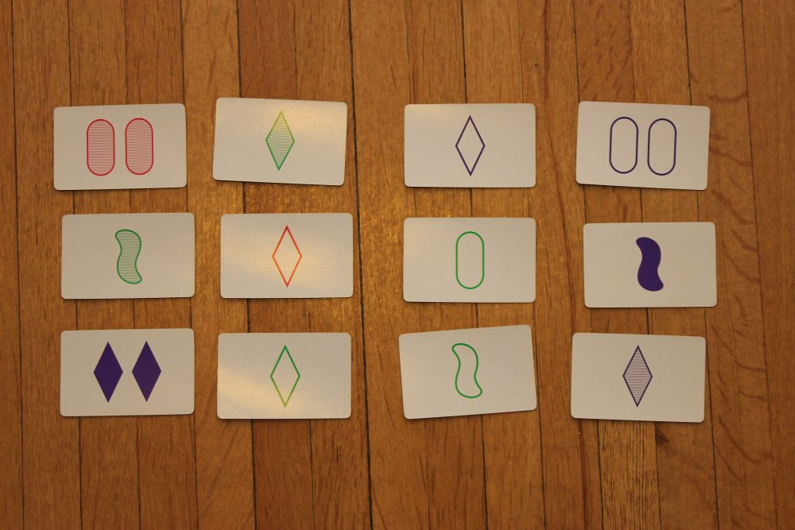
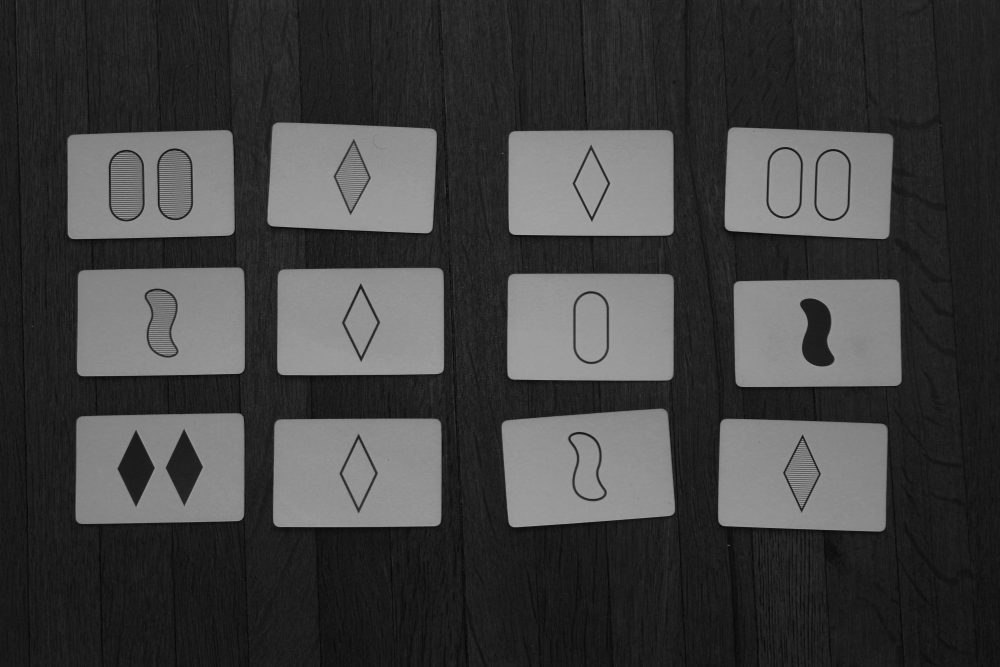
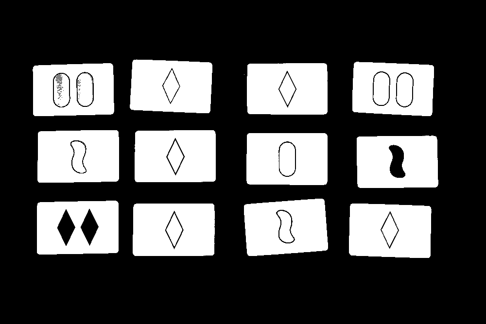
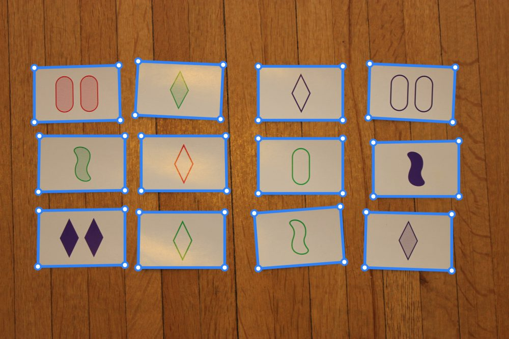
2Flatten each card and remove the lighting
The four corners give a perspective transform that maps the card onto a flat 300 × 200 pixel rectangle, long side horizontal. Now the symbols always stand upright in a row and any stripes run along the rows of pixels.
Then it fits a smooth curved surface through the card's white areas and divides it out. That cancels a warm lamp, a cool window or a light gradient across the card: afterwards the card's white is exactly white everywhere, and the ink keeps its true colour.
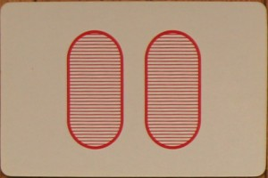
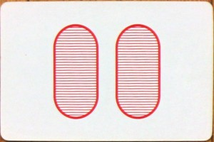
3Find the ink and the symbols
Ink is anything darker or more colourful than the white around it. Measuring it against the local white means a shadow falling across the card doesn't count: shadows are grey, and dim every colour equally. The ink image is thresholded, the outlines are filled in, and each solid blob of the right size is one symbol.
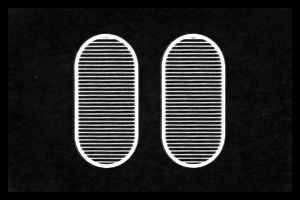
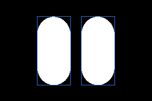
4Number: where the symbols sit
Symbols are printed in fixed positions, so rather than counting, it asks which layout the symbols fit. This still gives the right answer when glare has wiped out one symbol of three: the two that remain are in the outer slots, and only a three-card puts symbols there.
5Colour: the hue of the strongest ink
It averages the most strongly inked pixels of each symbol, relative to the white just outside it, and converts that to a hue: an angle round the colour wheel. Red, green and purple land far apart, so three fixed ranges are enough. Every dot below is a card from a labelled photo.
6Shading: how much ink is inside
It compares the ink in the middle of the symbol (inside the blue outline below) with the ink on the symbol's border. Solid comes out near 1, open near 0, striped in between.
Stripes are the hard part: they are thin lines with gaps, so on a small or blurry card they nearly vanish. So it also reads the inside row by row. Striped symbols give a regular up-and-down rhythm; an empty symbol with a bit of glare does not.
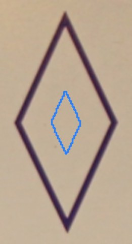
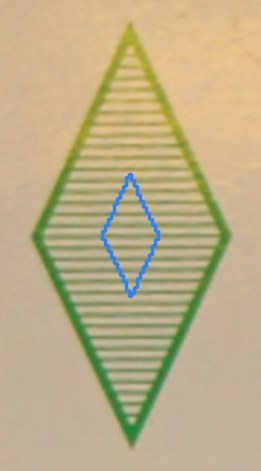
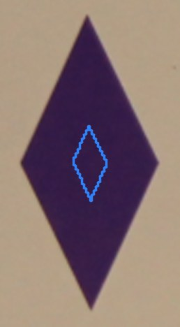
Under each symbol: ink in each row of the blue region, top to bottom, as a fraction of the border's ink.
7Shape: two ratios
Two numbers tell the shapes apart. Extent is how much of its bounding box (grey) the symbol fills: a diamond fills about half, an oval almost all. Solidity is how much of its convex hull (blue, a rubber band stretched round it) it fills: only the squiggle has inward curves that leave gaps.
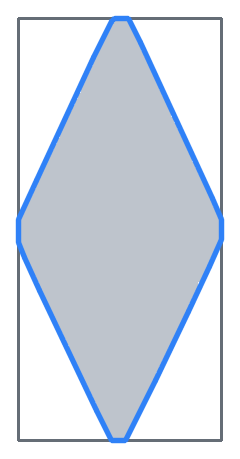
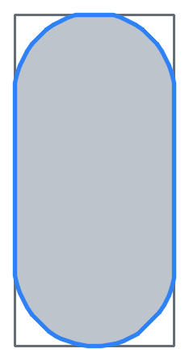
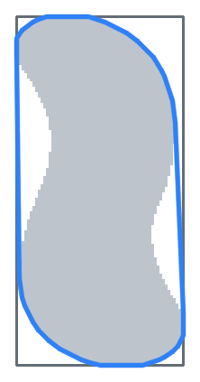
8Throw out anything that isn't a card
Plenty of things are white and rectangular: the box, the back of the deck, a phone, a sheet of paper. A candidate is kept only if its edge is blank, its symbols sit in the slots, there's little ink anywhere else, and its shapes look like real Set symbols.
How does it find the sets?
Each attribute gets a code of 0, 1 or 2. Three values are all the same or all different exactly when their codes add up to a multiple of 3 (0+0+0, 1+1+1, 2+2+2 or 0+1+2), so three cards are a set when that holds for all four attributes. With 12 cards there are only 220 groups of three, so it simply checks them all.
| Number | Colour | Shading | Shape | |
|---|---|---|---|---|
| 1 open purple diamond | 0 | 2 | 0 | 0 |
| 1 open red diamond | 0 | 0 | 0 | 0 |
| 1 open green diamond | 0 | 1 | 0 | 0 |
| Sum | 0 ✓ | 3 ✓ | 0 ✓ | 0 ✓ |
How accurate is it?
| Photos | Read correctly |
|---|---|
| 5 board photos and 36 single cards it was developed on | 88 / 88 |
| Those boards rotated, blurred, darkened, colour-cast, noisy, low-resolution or at a steep angle | 935 / 936 |
| 10 board photos from another project, with glare, shadows and clutter | 125 / 126 |
| All 81 cards of a different deck | 81 / 81 |
The last two rows were first run after the detector passed the first two, but they then guided a round of fixes, so they are not a strictly unseen test.
When does it get it wrong?
- Pale backgrounds. It finds cards by their whiteness, so they need a darker surface underneath. A white tablecloth won't work.
- Touching cards. Cards that touch or overlap can merge into one blob and be missed.
- Heavy glare. Glare can erase an outline or the stripes entirely, and then there is nothing left to measure.
If a card is misread, tap it in the Cards list to correct it; the sets update straight away.
Why not a neural network?
Mostly because it isn't needed. Once a card is flattened and its lighting removed, each attribute comes down to one or two numbers, and the charts above show the classes sit far apart. Hand-built measurements like these need only a few dozen labelled examples to set the thresholds, run in well under a second on a phone, and when one goes wrong you can see exactly why.
Does my photo get uploaded?
No. The page is static files; the detector is JavaScript that runs in your browser. Once the app has been opened it also works offline.